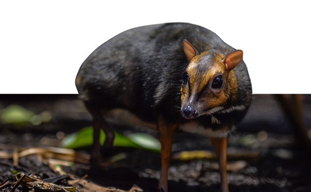
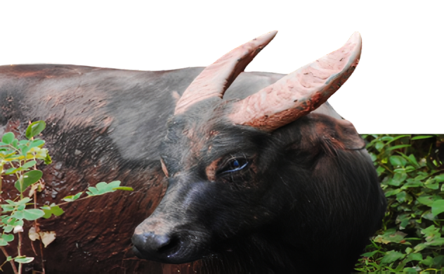
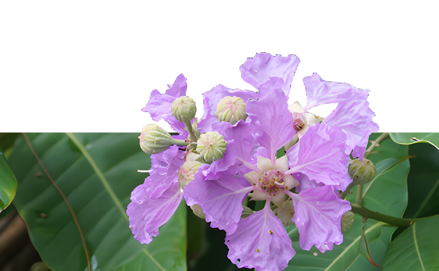
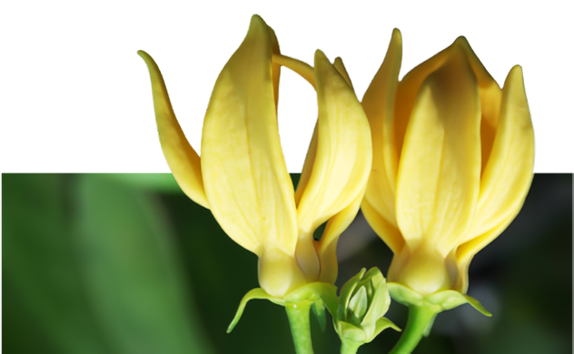
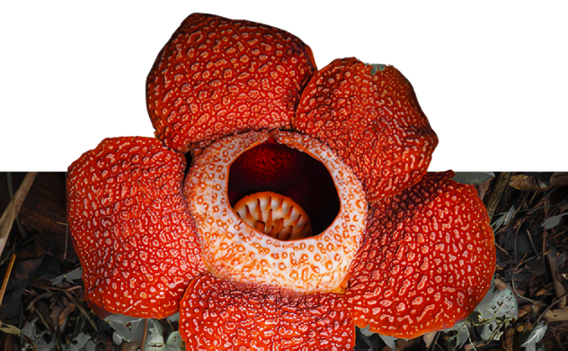

The Philippines is one of the world’s most biologically rich and diverse nations, earning a place among the 17 megadiverse countries globally. Its more than 7,600 islands are home to a wide range of ecosystems — from tropical rainforests and mangroves to coral reefs and mountain ranges — each supporting unique forms of life. This natural variety has led to the evolution of countless endemic species found nowhere else on Earth.
Philippine wildlife is not just remarkable in number but also in its role within the ecosystem and cultural identity. Animals like the Philippine eagle and tarsier have become powerful national symbols, while lesser-known species contribute silently to pollination, soil health, and ecological balance. However, many of these species are threatened by habitat loss, pollution, and climate change — making awareness and conservation more important than ever.
The Philippine archipelago is home to an extraordinary range of animal species, many of which are endemic to specific islands and habitats. These creatures reflect the ecological uniqueness and diversity of the nation. Each animal tells a story of evolution and adaptation of Philippine natural heritage.
The binturong, also known as the “bearcat,” is a unique mammal with a prehensile tail and a scent that smells like popcorn. Found in the forests of Palawan, it is a nocturnal, tree-dwelling animal that uses its strong limbs and tail to move easily through the trees.
The Draco rizali, or Rizal’s flying lizard, is a small lizard found in the forests of the Philippines. It can glide from tree to tree using flaps of skin along its sides, helping it escape predators and move easily among the trees.

The Philippine eagle, the majestic national bird of the Philippines, is known for its distinctive crown of feathers and piercing eyes. Found only in the remaining rainforests of the archipelago, this critically endangered raptor is also called the monkey-eating eagle.

The pilandok, or Philippine mouse-deer, is a small, shy animal found mostly in the forests of Palawan. Despite its name, it’s not a true deer but belongs to a unique group of hoofed mammals. It is known for its tiny size and secretive, nocturnal habits.
The Sulu hornbill is a rare and critically endangered bird found only in the Sulu Archipelago of the southern Philippines. It has a large, curved bill and mostly black feathers with a white tail. Due to habitat loss and hunting, only a few individuals are believed to remain in the wild.

The Samar cobra is a venomous snake native to the island of Samar in the Philippines. Known for its distinctive hood, it uses this feature to intimidate predators and threats. It plays an important role in controlling rodent populations in its forest habitat.

The tamaraw is a dwarf buffalo species endemic to Mindoro Island. Though smaller than its water buffalo relatives, it is a powerful and resilient animal, uniquely adapted to the island’s terrain. Its population has significantly declined, making it critically endangered today.
The tarsier is one of the world’s smallest primates, known for its enormous eyes and excellent night vision. These nocturnal creatures are found mainly in Bohol and other islands in the Visayas. They spend most of their time clinging to tree branches in dense forests.

The Philippines is home to over 10,000 species of flowering plants, many of which are found nowhere else in the world. From the massive Rafflesia to the delicate Sampaguita, Philippine flora reflects the country’s ecological richness and cultural soul. These plants don't just beautify its landscapes — they nourish traditions, medicine, and meaning.
The Banaba tree, known for its striking purple flowers, is valued both for its beauty and medicinal properties. Its leaves are traditionally brewed into tea believed to help regulate blood sugar levels and promote kidney health.
The Gumamela, also known as hibiscus, is a common ornamental flower in the Philippines. It comes in a variety of bright colors and is often used in traditional remedies for coughs, fevers, and inflammation.
The Ilang-Ilang tree produces fragrant yellow-green flowers used in making perfumes and essential oils. Native to Southeast Asia, it thrives in lowland tropical forests and is known for its calming scent and cultural significance in traditional healing.
The Narra tree, the national tree of the Philippines, symbolizes strength and resilience. It produces hard, durable wood used in furniture and construction, and its bright yellow flowers bloom beautifully during the dry season.
The Rafflesia is one of the world’s largest flowers, known for its foul smell that resembles rotting flesh. It is a parasitic plant with no leaves or roots and is found in the rainforests of Luzon and Mindanao. It blooms rarely and is considered endangered.
The Rosal, or gardenia, is cherished for its creamy white petals and strong, pleasant fragrance. It is often planted in gardens and used in ceremonies, symbolizing elegance, serenity, and enduring affection in Filipino tradition.
The Sampaguita is the national flower of the Philippines. This small white flower is known for its sweet fragrance and is commonly used in garlands and religious offerings. It symbolizes purity, simplicity, and humility in Filipino culture.
The Waling-Waling, known as the "Queen of Philippine Orchids,” is celebrated for its large, vibrant blooms. It holds cultural importance as a national flower of the Philippines, alongside the Sampaguita.